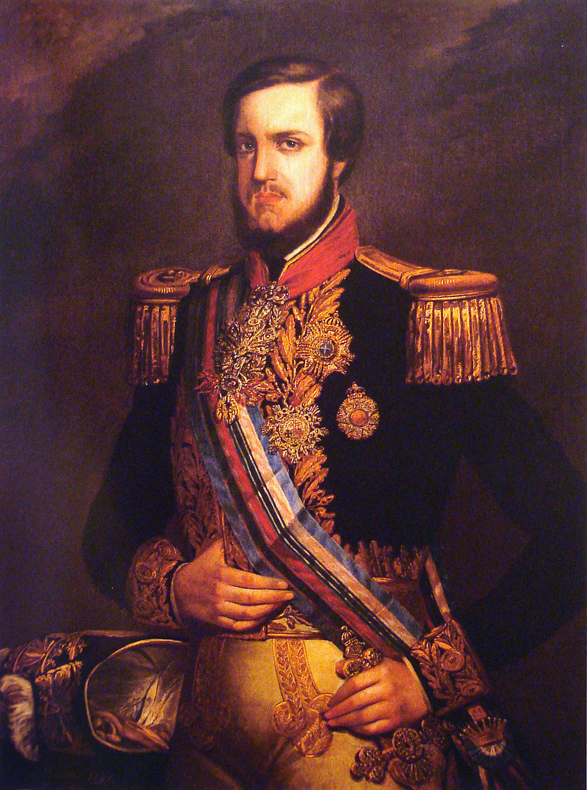

O Segundo Reinado corresponde ao período de 23 de julho de 1840 a 15 de novembro de 1889, em que o Brasil esteve sob reinado de D. Pedro II (1825-1891).
Foi caracterizado como um período de relativa paz entre as províncias brasileiras, a abolição gradual da escravidão e a Guerra do Paraguai.
Este período histórico se encerrou com o golpe republicano em 15 de novembro de 1889.

Dom Pedro II em 1851
Nessa época surgem os primeiros partidos políticos no Brasil:
• o Partido Liberal, cujos membros eram conhecidos como os “luzia”;
• o Partido Conservador, cujos membros eram conhecidos como os “saquarema”.
A rigor, ambos os partidos defendiam as ideias de elite, como a manutenção da escravidão. Somente se diferiam em relação ao poder
central, com os liberais lutando por mais autonomia provincial e os conservadores por mais centralização.
Por causa da abdicação do seu pai, D. Pedro II sentiu a necessidade de mudar forma de governo. Seguindo, assim, ao sistema que tem
origem na Inglaterra, em 1847 é implantado o parlamentarismo no Brasil.
Este sistema ficou conhecido como parlamentarismo às avessas dado que o Presidente de Conselho era escolhido de uma lista de tripla
pelo imperador e não necessariamente era o candidato mais votado, como na Inglaterra. O imperador também detinha o Poder Moderador,
mas este foi usado poucas vezes pelo soberano.
Comparado ao período regencial (1831-1840), não houve muitos conflitos internos durante o Segundo Reinado. No entanto, entre as
revoltas que sacudiram o país podemos citar:
• a Revolução Praieira, de 1848-1850, em Pernambuco,
• a Revolta dos Muckers, no Rio Grande do Sul, em 1873-1874
• a Revolta dos Quebra-Quilos, na região nordeste, em 1872-1877.
Nessa época, as excelentes condições de plantio no Vale do Paraíba alavancaram a produção e a exportação do café.
O Brasil começou a exportar mais do que a importar e a procura pelo café era tão grande que havia necessidade de aumentar a mão de obra.
Por isso, os fazendeiros de café viam com maus olhos as tentativas de qualquer lei que favorecesse a abolição da escravidão.
A fim de se proteger, os latifundiários apoiam a vinda de imigrantes, especialmente italianos, para trabalharem nos cafezais.
Em decorrência do crescimento da exportação de café são construídas as primeiras ferrovias e formaram-se muitas cidades. Os portos de
Santos e Rio de Janeiro prosperam.
Nessa época começam a ser montadas as primeiras fábricas no Brasil, ainda que de forma isolada e em grande parte devido ao trabalho do
Barão de Mauá.
Desde 1808, no Período Joanino, a Inglaterra já pressionava tanto Portugal quanto o Brasil para a abolição da escravidão.
Isso, porque estava interessada na expansão de seu mercado consumidor no Brasil e, em meio a sua ação imperialista na África, não via
vantagens no tráfico atlântico brasileiro.
A pressão para a abolição também foi interna. Os movimentos abolicionistas se intensificaram neste momento, a partir da ação de negros
libertos e da classe média branca do país.
Nesse momento, surgiram discursos abolicionistas e republicanos, favoráveis a uma economia mais dinâmica a partir da mão-de-obra livre
e de um sistema político mais moderno.
Além disso, as várias formas de ações de resistência da população negra foram fator central e fundamental. Os quilombos, revoltas e
atos individuais acabaram por enfraquecer a estrutura.
Mediante às pressões internas e externas, foram adotadas leis que levaram, gradativamente, ao fim da escravidão no Brasil:
• Lei Eusébio de Queiroz (1850): proibição do tráfico negreiro;
• Lei do Ventre Livre (1871): determinou que os filhos nascidos de mulheres escravizadas, nasciam livres.
Porém, o senhor permanecia responsável por essa criança até que ela atingisse 21 anos, fazendo com que permanecessem trabalhando
em regime de escravidão, apesar da lei;
• Lei dos Sexagenários (1885): determinou a libertação dos escravizados que tivessem 60 anos ou mais. Essa lei,
entretanto, era mais vantajosa para os senhores do que para os escravizados, uma vez que eram poucos os negros escravizados que
chegavam a essa idade, e os que chegavam, já não eram produtivos nas fazendas;
• Lei Áurea (1888): enquanto Dom Pedro II viajava, a lei assinada em 13 de maio por sua filha, a Princesa Isabel.
A lei não garantiu a integração social, política e econômica da população negra no Brasil.
A partir da metade do século XIX, muitos italianos e alemães chegaram ao Brasil, fugindo dos conflitos em seus países de origem.
A mão-de-obra escrava foi sendo gradativamente substituída pela mão-de-obra livre assalariada desses imigrantes, que eram mais bem
vistos socialmente por serem brancos. Esses imigrantes trabalharam, principalmente, no Oeste Paulista.
É importante lembrar que, desde 1850, foi instituída a chamada Lei de Terras. Essa lei determinava que a posse das terras só poderia
acontecer mediante à compra. Foi uma estratégia para impedir que negros libertos e imigrantes tivessem acesso às terras por meio de
doação ou herança.
Nesta época, o Paraguai, liderado por Solano Lopes, estava se tornando auto-sustentável e já não dependia de outros países para
sobreviver.
É nesse contexto que seu governante decide buscar uma saída para o mar, a fim de solidificar a suficiência do país.
Para chegar ao mar, precisava conquistar territórios de outros países, com quem acaba entrando em conflito. Esses países foram Brasil,
Argentina e Uruguai, que formaram a chamada Tríplice Aliança.
As primeiras vitórias foram de Solano Lopes. Entretanto, as baixas no exército paraguaio os enfraqueceu, permitindo vitórias da
Tríplice Aliança.
Em 1866, mediante as perdas de contingente humano durante os conflitos, Dom Pedro II convoca os escravizados para lutar, prometendo-os
a liberdade no seu retorno da guerra.
A guerra teve fim com a Campanha da Cordilheira, em que o exército brasileiro consegue eliminar o líder paraguaio Solano Lopes.
O Paraguai teve sua fronteira diminuída e 75% da sua população dizimada, principalmente homens maiores de 20 anos.
O exército brasileiro saiu fortalecido e o país endividado com a Inglaterra, por conta dos muitos empréstimos realizados.
A partir de 1880, o Segundo Reinado passa a enfrentar muitas instabilidades. Os ideais modernos e republicanos começaram a tomar conta
de parte da classe média brasileira.
Ao mesmo tempo, parte dos fazendeiros teve dificuldade na contratação de mão-de-obra assalariada e, com o fim da escravidão,
tornaram-se força contrária à figura de Dom Pedro II.
Mas foi, principalmente, a insatisfação da Igreja, com a interferência do monarca nas questões religiosas, e dos militares,
com a desvalorização de seu trabalho e seus baixos salários, que levou a derrocada do Segundo Reinado.
A Programação da República aconteceu em 15 de novembro de 1889, liderada pelo Marechal Deodoro da Fonseca.